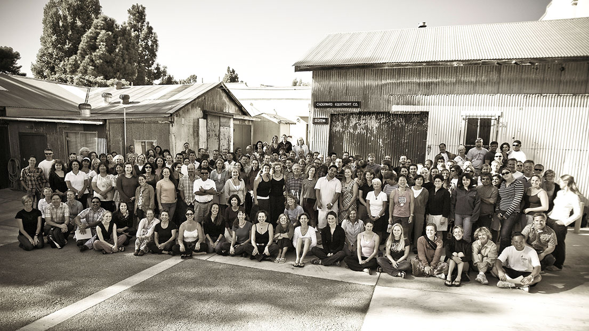

history  대장장이 등반가 색깔을 입히다 등반가를 위한 옷 파도가 칠 때는 서핑을 파타고니아 창립자 이본 쉬나드는 1953년, 사냥을 위해 독수리와 팔콘을 훈련시키는 남부 캘리포티나 팔콘 클럽에서 활동하던 14살 때 클라이밍을 처음 시작했습니다. 젊은 리더였던 돈 프렌티스는 어린 친구들에게 팔콘 둥지가 있는 절벽으로 하강하는 방법을 가르쳐 주었습니다. 이본과 친구들은 샌 페르나도 계곡 서쪽 끝으로 향하는 열차에 뛰어 올라 스토니 포인트의 사암 절벽으로 갔습니다. 거기서 이본은 등반과 하강법을 배웠습니다.